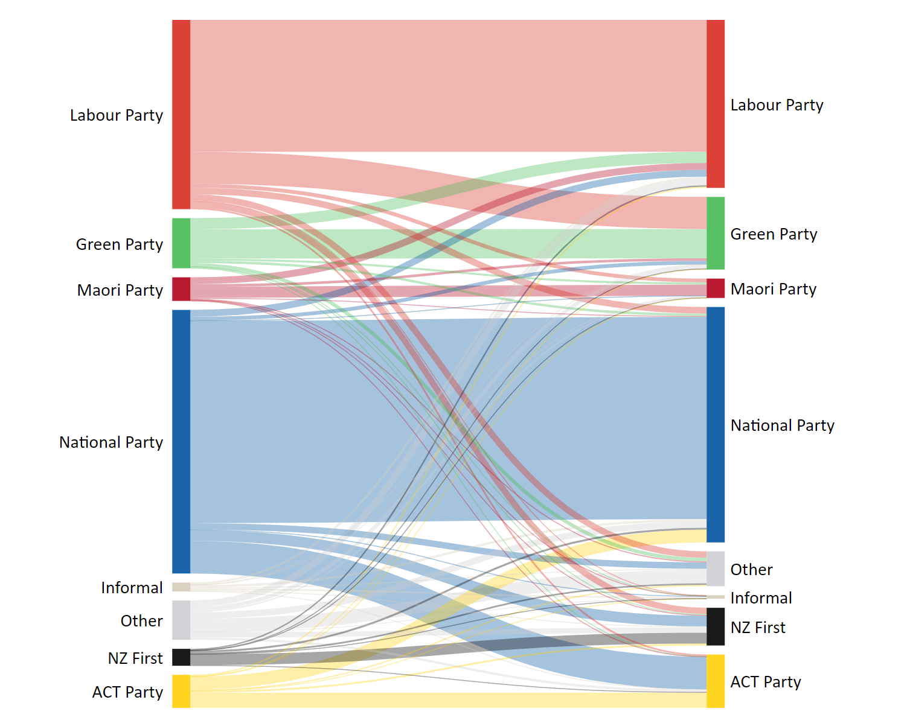

Using the scgElectionsNZ datasets
Source:vignettes/articles/using-scgElectionsNZ.Rmd
using-scgElectionsNZ.Rmd
This article provides examples of using each dataset included in
the scgElectionsNZ package.
Summary
The summary dataset contains the overall results at the
national-level by Election, Ballot, and Party. It can be used to find
the number of seats, votes (n & %), and nominations/on party list by
ballot type - Candidate Vote, Party Vote, or Total (Seats column =
Candidate + Party; Vote column = Party only). It can also be used to
find the number of overhang seats and which party these can be
attributed to.
NB overhang seats occur when the Party Vote entitles that party
to fewer seats than the number of electorate seats that it won.
View the Party Vote and Candidate Vote for
2023:
# Load datasets by using the following helper function:
df <- get_data("summary")
# Alternatively, use: data("summary")
df %>%
filter(Ballot != "Total", Election == 2023) %>%
arrange(-Percentage) %>%
head(n = 10)
#> Election Ballot Party Seats Votes Percentage Nominated
#> 1 2023 Candidate National Party 43 1192251 43.47 67
#> 2 2023 Party National Party 5 1085851 38.08 74
#> 3 2023 Candidate Labour Party 17 855963 31.21 72
#> 4 2023 Party Labour Party 17 767540 26.92 76
#> 5 2023 Party Green Party 12 330907 11.61 49
#> 6 2023 Party ACT Party 9 246473 8.64 60
#> 7 2023 Candidate Green Party 3 226575 8.26 52
#> 8 2023 Party NZ First 8 173553 6.09 35
#> 9 2023 Candidate ACT Party 2 149507 5.45 59
#> 10 2023 Candidate Maori Party 6 106584 3.89 17
#> Registered Successful
#> 1 Yes Yes
#> 2 Yes Yes
#> 3 Yes Yes
#> 4 Yes Yes
#> 5 Yes Yes
#> 6 Yes Yes
#> 7 Yes Yes
#> 8 Yes Yes
#> 9 Yes Yes
#> 10 Yes YesView the Party Vote (%) of successful parties only to determine where the overhang seats in 2023 can be attributed to:
df %>%
filter(Successful == "Yes", Ballot == "Total", Election == 2023) %>%
group_by(Election) %>%
mutate(`%` = Votes/sum(Votes)*100) %>%
ungroup() %>%
mutate(Overhang = Seats-round(120*`%`/100,0))
#> # A tibble: 6 × 11
#> Election Ballot Party Seats Votes Percentage Nominated Registered Successful
#> <dbl> <chr> <chr> <int> <dbl> <dbl> <int> <chr> <chr>
#> 1 2023 Total ACT P… 11 2.46e5 8.64 119 Yes Yes
#> 2 2023 Total Green… 15 3.31e5 11.6 101 Yes Yes
#> 3 2023 Total Labou… 34 7.68e5 26.9 148 Yes Yes
#> 4 2023 Total Maori… 6 8.78e4 3.08 48 Yes Yes
#> 5 2023 Total NZ Fi… 8 1.74e5 6.09 69 Yes Yes
#> 6 2023 Total Natio… 48 1.09e6 38.1 141 Yes Yes
#> # ℹ 2 more variables: `%` <dbl>, Overhang <dbl>Plot the number of seats won by party at each election:
df %>%
# remove parties which did not win a seat
filter(Successful == "Yes", Ballot == "Total") %>%
ggplot(aes(x = Election, y = Seats,
fill = factor(Party, levels = c("National Party","ACT Party","NZ First",
"United Future","Jim Anderton's Progressive",
"MANA","Maori Party","Alliance","Green Party",
"Labour Party")))) +
geom_bar(stat="identity", colour="white", linewidth=0.15, alpha=0.8) +
# indicate majority required for a 120 seat parliament
geom_hline(yintercept = 60, colour = "white", linewidth=0.5) +
# indicate overhang seats
geom_hline(yintercept = 120, colour = scgUtils::colour_pal("French Grey")) +
annotate("text", x=2025, y =120, label = "Overhang",
colour = scgUtils::colour_pal("Regent Grey"),
size=3.5, fontface=2) +
coord_flip(clip = "off", xlim = c(1994.5,2024.5)) +
labs(title = "No. of Seats by Election and Party (1996 - 2023)",
fill = "Party") +
scale_fill_manual(values = scgUtils::colour_pal("polNZ")) +
scale_y_continuous(expand = c(0,0)) +
scale_x_continuous(expand = c(0,0), "Election",
labels = as.character(df$Election), breaks = df$Election) +
scgUtils::theme_scg() +
theme(panel.grid.major.y = element_blank(),
panel.grid.minor.y = element_blank()) This dataset
can be combined with the
This dataset
can be combined with the preMMP_results dataset which
contains the overall results between 1890 and 1993 by party at the
national-level.
df <- df %>%
filter(Ballot == "Total") %>%
mutate(Party = ifelse(Successful == "Yes", Party, "Other")) %>%
group_by(Election, Party) %>%
summarise(Seats = sum(Seats), Votes = sum(Votes), .groups = 'drop') %>%
ungroup() %>%
group_by(Election) %>%
mutate(Percentage = round(Votes/sum(Votes)*100),2) %>%
ungroup() %>%
select(Election, Party, Seats, Percentage)
df1 <- get_data("preMMP_results")
df2 <- rbind(df, df1)
df2 <- df2 %>%
# filter 1935 until current time (since the beginning of the National and Labour parties)
filter(Election >= 1935) %>%
mutate(Party = ifelse(Party %in% c("National Party", "Labour Party"), Party,
ifelse(Party == "United-Reform ('National')", "National Party",
"Other")),
Party = factor(Party, levels = c("National Party", "Other", "Labour Party"))) %>%
group_by(Election, Party) %>%
summarise(Percentage = round(sum(Percentage),2), .groups = 'drop') %>%
ungroup()
df2 %>%
ggplot(aes(x = reorder(Election, -Election), y = Percentage,
fill = Party)) +
geom_bar(stat = "identity", alpha = 0.8, width = 1, size = 0) +
geom_bar(data = df2%>%filter(Election == 2023), aes(x = 1, y = Percentage, fill = Party),
stat = "identity", alpha = 1, width = 1) +
# Add 50% line
geom_hline(yintercept = 50, colour = "white") +
annotate("text", x = 31.2, y = 50, label = "50%", size = 3.5, fontface = 2,
colour = scgUtils::colour_pal("Regent Grey")) +
annotate("text", x = 31.2, y = 0, label = "Party Vote >", size = 3, fontface = 2,
colour = scgUtils::colour_pal("Regent Grey"), hjust = 0) +
annotate("text", x = 31.2, y = 100, label = "< Party Vote", size = 3, fontface = 2,
colour = scgUtils::colour_pal("Regent Grey"), hjust = 1) +
# Add dashed lines for 2023 result
geom_hline(yintercept = df2$Percentage[df2$Election == 2023 & df2$Party == "Labour Party"],
colour = "white", linewidth = 0.5, linetype = "dashed") +
geom_hline(yintercept = 100-df2$Percentage[df2$Election == 2023 & df2$Party == "National Party"],
colour = "white", linewidth = 0.5, linetype = "dashed") +
# Add introduction of MMP line
geom_vline(xintercept = 10.5, colour = scgUtils::colour_pal("Black80"),
linetype = "dashed", linewidth = 0.25) +
annotate("text", x = 10.5, y = 100.75, label = "MMP introduced", size = 3.5, fontface = 2,
colour = scgUtils::colour_pal("Black80"), hjust = 0) +
# Add text to 2023 result
geom_text(x = 1, y = 1,
label = paste0(df2$Percentage[df2$Election == 2023 & df2$Party == "Labour Party"], "%"),
hjust = 0, size = 3, colour = "white") +
annotate("text", x = 0, y = 0, label = "Labour", size = 3.5, fontface = 2,
colour = "#D82A20", hjust = 0) +
geom_text(x = 1, y = df2$Percentage[df2$Election == 2023 & df2$Party == "Labour Party"]+
(df2$Percentage[df2$Election == 2023 & df2$Party == "Other"]/2),
label = paste0(format(df2$Percentage[df2$Election == 2023 & df2$Party == "Other"],
nsmall=2), "%"),
hjust = 0.5, size = 3, colour = scgUtils::colour_pal("Black80")) +
annotate("text", x = 0, y = df2$Percentage[df2$Election == 2023 & df2$Party == "Labour Party"]+
(df2$Percentage[df2$Election == 2023 & df2$Party == "Other"]/2),
label = "Minor Parties", size = 3.5, fontface = 2,
colour = scgUtils::colour_pal("Regent Grey"), hjust = 0.5) +
geom_text(x = 1, y = 99,
label = paste0(df2$Percentage[df2$Election == 2023 & df2$Party == "National Party"], "%"),
hjust = 1, size = 3, colour = "white") +
annotate("text", x = 0, y = 100,
label = "National", size = 3.5, fontface = 2,
colour = "#00529F", hjust = 1) +
labs(title = "% Party Vote by Election between 1935 and 2023") +
scale_y_continuous(expand = c(0,0), position = "right",
breaks = seq(0, 100, by = 5)) +
scale_fill_manual(values = scgUtils::colour_pal("polNZ")) +
coord_flip(clip = "off", xlim = c(1,30), ylim = c(0,100.25)) +
scgUtils::theme_scg() +
theme(legend.position = "none",
plot.margin = unit(c(1,3,1,1), "cm"),
plot.title = element_text(vjust = 5, colour = scgUtils::colour_pal("Black80")),
panel.grid.major = element_blank(),
panel.grid.minor = element_blank(),
axis.line = element_blank(),
axis.ticks.y = element_blank(),
axis.title.x = element_blank(),
axis.title.y = element_blank(),
axis.text.x = element_blank()
)
Turnout
The turnout dataset contains the overall turnout and
informal vote by electorate and ballot type (Candidate and Party). It
also has the total vote (informal + valid) and total number of electors
in the election.
This dataset can be combined with the historic_turnout
dataset which contains the overall turnout at the national-level for all
elections between 1879 and 2023. It also contains the total number of
MPs in parliament for that election, and the total number of electors.
Compare electorate-level turnout to
national-level:
df <- get_data("turnout")
df1 <- get_data("historic_turnout")
df2 <- left_join(df, df1, by = "Election")
df2 <- df2 %>%
filter(Ballot == "Party", Election == 2023) %>%
mutate(Turnout = Turnout.x - Turnout.y)
df2 %>%
ggplot(aes(x=Turnout, y=reorder(Electorate, Turnout), fill = ifelse(Turnout < 0,
"Underperformed",
"Overperformed"))) +
geom_bar(stat = "identity") +
scale_fill_manual(values = scgUtils::colour_pal("divBlueGreen", n = 2)) +
scale_x_continuous(limits = c(-16,16), expand = c(0,0)) +
labs(title = "Comparing the National-Level Turnout\nwith the Electorate-Level",
fill = "",
y = "",
x = "% Difference in Turnout\n(Electorate - National)") +
scgUtils::theme_scg() +
theme(panel.border = element_rect(colour=scgUtils::colour_pal("French Grey")))
View turnout over time to see how 2023 compares:
df1 %>%
ggplot(aes(x = as.character(Election), y = Turnout, label = Turnout)) +
geom_bar(data=df1,
aes(x = as.character(Election), y = 100),
stat = "identity",
fill = scgUtils::colour_pal("French Grey"),
alpha=0.5) +
geom_bar(stat = "identity",
fill = scgUtils::colour_pal("Waterloo")) +
geom_hline(yintercept = df1$Turnout[df1$Election == 2023],
colour = "white", linetype = "dashed") +
geom_text(hjust = 0, nudge_y = 0.5, size = 3.5, fontface=2,
colour = scgUtils::colour_pal("Waterloo")) +
coord_flip(clip = "off", xlim = c(1,length(df1$Election))) +
annotate("text", x=length(df1$Election)+1.5,
y = df1$Turnout[df1$Election == 2023],
label = "2023",
colour = scgUtils::colour_pal("Regent Grey"),
size=3.5, fontface=2) +
scale_y_continuous(limits = c(0,100), expand = c(0,0)) +
labs(title = "Turnout Over Time (1879 - 2023)",
y = "Turnout (%)",
x = "Election") +
scgUtils::theme_scg() +
theme(panel.grid.major.y = element_blank(),
panel.grid.minor = element_blank(),
panel.border = element_rect(colour=scgUtils::colour_pal("French Grey")))
Vote Type
The vote_type dataset contains the validity of the vote
(Disallowed, Informal, and Valid) and the vote type (Ordinary, Special -
NZ, and Special - Overseas) by electorate and ballot type (Candidate and
Party).
View percent of disallowed votes by electorate
and ballot:
df <- get_data("vote_type")
df %>%
filter(Election == 2023) %>%
group_by(Ballot, Electorate, Validity) %>%
summarise(Votes = sum(Votes), .groups = 'drop') %>%
ungroup() %>%
group_by(Ballot, Electorate) %>%
mutate(Percentage = Votes/sum(Votes)*100) %>%
ungroup() %>%
filter(Validity == "Disallowed") %>%
arrange(-Percentage) %>%
head(n = 10)
#> # A tibble: 10 × 5
#> Ballot Electorate Validity Votes Percentage
#> <chr> <chr> <chr> <dbl> <dbl>
#> 1 Candidate Port Waikato Disallowed 804 11.7
#> 2 Candidate Hauraki-Waikato Disallowed 1767 6.77
#> 3 Candidate Tamaki Makaurau Disallowed 1749 6.59
#> 4 Candidate Manurewa Disallowed 1652 5.59
#> 5 Candidate Te Tai Tokerau Disallowed 1553 5.42
#> 6 Candidate Waiariki Disallowed 1502 5.10
#> 7 Candidate Te Tai Hauauru Disallowed 1324 4.91
#> 8 Candidate Panmure-Otahuhu Disallowed 1416 4.68
#> 9 Candidate Ikaroa-Rawhiti Disallowed 1244 4.61
#> 10 Candidate Te Tai Tonga Disallowed 1191 4.18
# ...View percentage of voters overseas by electorate:
df %>%
# including only valid and informal votes
filter(Election == 2023, Validity != "Disallowed") %>%
group_by(Ballot, Electorate, Vote_Type) %>%
summarise(Votes = sum(Votes), .groups = 'drop') %>%
ungroup() %>%
group_by(Ballot, Electorate) %>%
mutate(Percentage = Votes/sum(Votes)*100) %>%
ungroup() %>%
filter(Vote_Type == "Special - Overseas") %>%
arrange(-Percentage) %>%
head(n = 10)
#> # A tibble: 10 × 5
#> Ballot Electorate Vote_Type Votes Percentage
#> <chr> <chr> <chr> <dbl> <dbl>
#> 1 Candidate Port Waikato Special - Overseas 478 7.89
#> 2 Candidate Wellington Central Special - Overseas 3307 7.80
#> 3 Party Wellington Central Special - Overseas 3312 7.76
#> 4 Candidate Auckland Central Special - Overseas 2232 6.79
#> 5 Party Auckland Central Special - Overseas 2239 6.72
#> 6 Candidate Epsom Special - Overseas 2352 6.29
#> 7 Party Epsom Special - Overseas 2354 6.21
#> 8 Candidate Mt Albert Special - Overseas 1928 5.27
#> 9 Party Mt Albert Special - Overseas 1935 5.24
#> 10 Candidate Rongotai Special - Overseas 2027 4.96Add a region column to dataset::
df <- add_region(df)
df <- df %>%
# including only valid and informal votes
filter(Ballot == "Party", Validity != "Disallowed") %>%
group_by(Election, Region, Vote_Type) %>%
summarise(Votes = sum(Votes), .groups = 'drop') %>%
ungroup() %>%
group_by(Election, Region) %>%
mutate(Percentage = Votes/sum(Votes)*100) %>%
ungroup() %>%
filter(Vote_Type == "Special - Overseas") %>%
arrange(-Percentage)
df %>%
ggplot(aes(x=as.character(Election), y=Percentage, group=Region, colour=Region)) +
geom_line() +
geom_point() +
gghighlight::gghighlight(use_direct_label = F) +
facet_wrap(.~reorder(Region, -Percentage)) +
scale_colour_manual(values = c("#374e8e", "#e3b13e", "#df7c18", "#ac004f",
"#704600", "#1b87aa", "#478c5b"),
breaks = c("South Island", "Wellington / Wairarapa",
"Taranaki / Whanganui / Manawatu",
"Bay of Plenty / Hawke's Bay / Gisborne",
"Waikato", "Auckland", "Northland")) +
labs(title = "Proportion of Overseas Special Party Votes\nby Region over Time (1996 - 2023)",
y = "Percentage (%)\n",
x = "Election") +
scgUtils::theme_scg() +
theme(axis.text.x = element_text(angle = 45, vjust = 0.5),
legend.position = "none")Party and Candidate Votes
The party_votes and candidate_votes
datasets contain party and candidate votes, respectively, by electorate
and party. Currently, the party_votes has all parties
listed, including the informal vote, while the
candidate_votes have only the successful parties listed
with the remaining parties listed as “Other”. The informal vote is also
not included.
Future updates to the candidate_votes dataset will
replicate the party_votes dataset so that the “Other”
category is broken down into all parties and the informal vote is
included.
df <- get_data("party_votes")
df1 <- get_data("candidate_votes")
df <- df %>%
mutate(Party = ifelse(Party %in% c("Labour Party", "National Party", "Green Party",
"ACT Party", "NZ First", "Maori Party"), Party,
"Other")) %>%
group_by(Election, Electorate, Ballot, Party) %>%
summarise(Votes = sum(Votes), .groups = 'drop') %>%
ungroup() %>%
group_by(Election, Electorate, Ballot) %>%
mutate(Percentage = Votes/sum(Votes)*100) %>%
ungroup()
df2 <- rbind(df, df1)
df2 <- df2 %>%
filter(Election == 2023) %>%
mutate(Ballot = ifelse(Ballot == "Party", "Party Vote", "Candidate Vote")) %>%
select(Election, Ballot, Electorate, Party, Percentage) %>%
pivot_wider(names_from = Ballot, values_from = Percentage)
df2[is.na(df2)] <- 0
df2 %>%
filter(Party != "Other") %>%
ggplot(aes(x = `Candidate Vote`, y = `Party Vote`, colour = Party)) +
geom_smooth(method = "lm", se = TRUE, formula = y ~ x,
colour = scgUtils::colour_pal("French Grey"),
size=0.5, fill = "#F4F4F5", alpha = 0.5) +
geom_point() +
ggpmisc::stat_poly_eq(colour = scgUtils::colour_pal("Regent Grey")) +
facet_wrap(.~Party) +
scale_colour_manual(values = scgUtils::colour_pal("polNZ")) +
coord_equal(ylim = c(0,80), xlim = c(0,80)) +
labs(title = "2023 Candidate vs Party Vote\nby Electorate and Party",
y = "Party Vote (%)\n",
x = "Candidate Vote (%)") +
scgUtils::theme_scg() +
theme(legend.position = "none")
Majority
The majority dataset contains the winning candidate and
the margin of victory by electorate.
df <- get_data("majority")
# Convert pre-2020 electorate names to match name changes that occurred in 2020
df <- update_EName(df, column=Electorate)
# Add Electorate Type and filter for General electorates only
df <- add_type(df)
df %>%
filter(Electorate_Type == "General") %>%
# Remove electorates that had fewer than 7 elections
group_by(Electorate) %>%
mutate(No. = length(Electorate)) %>%
ungroup() %>%
filter(No. >= 7) %>%
mutate(Percentage = ifelse(Party %in% c("Labour Party", "Green Party",
"Alliance", "Jim Anderton's Progressive"),
-Percentage, Percentage)) %>%
ggplot(aes(y=Percentage, x=reorder(Election, -Election), group=Electorate, colour=Party)) +
geom_hline(yintercept = 0, colour = scgUtils::colour_pal("Regent Grey"),
linewidth = 0.5, linetype = "dashed") +
geom_smooth(method = "loess",formula = 'y ~ x',
colour = scgUtils::colour_pal("French Grey"),
span = 0.3, se = FALSE, alpha = 0.25, linewidth = 0.25) +
geom_point(shape='\u6c', size=4) +
scale_y_continuous(limits = c(-70,70), expand = c(0,0), position = "right",
breaks = c(-60,-40,-20,0,20,40,60),
labels = c("+60","+40","+20","0","+20","+40","+60")
) +
scale_x_discrete(expand=c(0,0)) +
scale_colour_manual(values = scgUtils::colour_pal("polNZ")) +
labs(title = "Margin of Victory (%) by General Electorate\nOver Time (1996 - 2023)",
caption = "\n\n*Includes electorates which existed at 7 or more elections only",
y = "",
x = "") +
coord_flip(clip = "off") +
scgUtils::theme_scg() %+replace%
theme(legend.position = "none",
panel.grid.major.y = element_blank(),
panel.grid.minor = element_blank(),
axis.line = element_blank(),
axis.ticks = element_blank(),
axis.text.x.top = element_text(vjust = 4)
)
Split Voting
The split_total dataset contains the number of voters
who cast their party vote for a different party to their candidate vote
at the national level, by party. This dataset only has election years
2005 through to 2023 due to there not being split-ticket voting data
available for previous years.
df <- get_data("split_total")
# Prepare Sankey Data
df <- df %>%
filter(Year==2023) %>% # get 2023 election data only
# combine unsuccessful minor parties into "Other" category
mutate(List_Party = ifelse(
List_Party %in% c("Labour Party","ACT Party","Maori Party",
"Green Party","National Party","NZ First",
"Informal"),
List_Party, "Other"
)) %>%
mutate(Electorate_Party = ifelse(
Electorate_Party %in%
c("Labour Party","ACT Party","Maori Party","Green Party",
"National Party","NZ First","Informal"),
Electorate_Party, "Other"
)) %>%
group_by(List_Party, Electorate_Party) %>%
summarise(Vote = sum(Votes)) %>%
ungroup()
# A tibble: 64 x 3
# List_Party Electorate_Party Vote
# <chr> <chr> <dbl>
# 1 ACT Party ACT Party 68692.
# 2 ACT Party Green Party 2095.
# ...
# =====================================#
# Look up colours
scgUtils::colour_pal("polNZ")
# $`ACT Party`
# [1] "#ffd006"
# $`Green Party`
# [1] "#45ba52"
# ...
# Create Sankey
scgUtils::plot_sankey(
data = df,
source = "Electorate_Party", # left side of sankey
target = "List_Party", # right side of sankey
value = "Vote",
colours = '"#ffd006","#45ba52","#d5cdb9","#D82A20","#B2001A","#000000","#00529F","#cdcdd1"',
fontSize = 20, # reduce font size from default
width = 1600 # increase width form default
) # %>%
# save from viewer to html
# htmlwidgets::saveWidget(file="sankey_2023.html", selfcontained = TRUE)